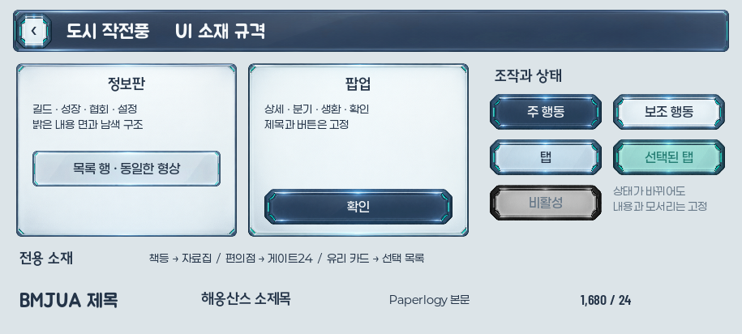
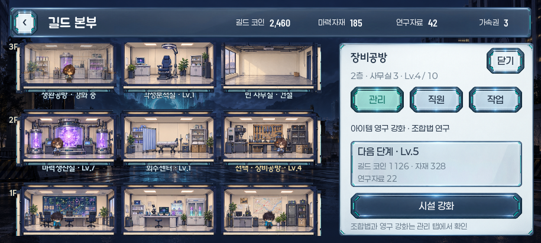
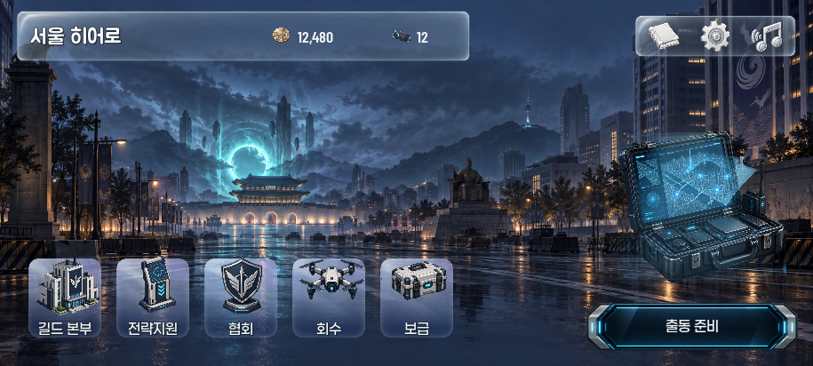
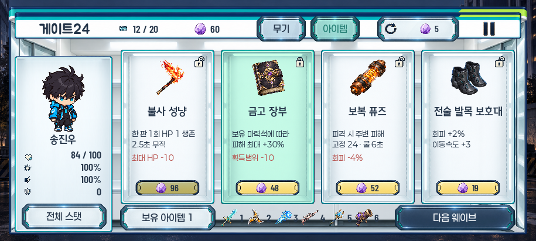
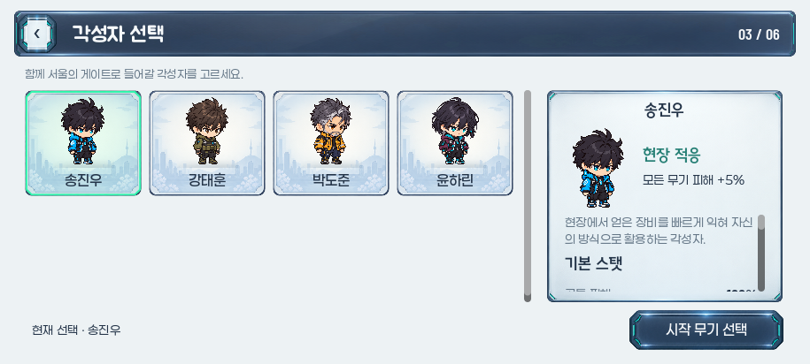
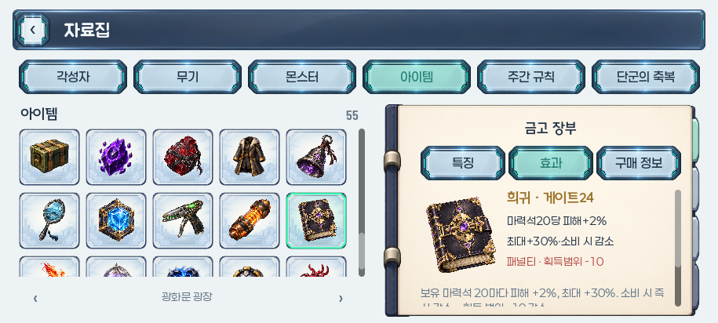
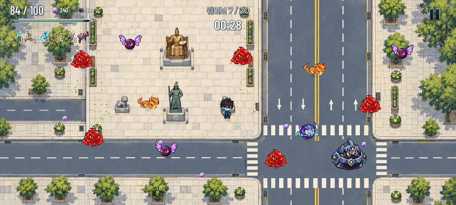

독립 시안 · 외관 승인 대기
서울 히어로 · 도시 작전풍 UI 규격
남색 구조와 밝은 내용 면. 같은 기능에는 같은 소재·폰트·상태를 사용하고, 상점·책·유리 카드의 개성은 유지합니다.
규격판 1장과 대표 화면 6장입니다. 게임 연결은 이 외관을 확인한 다음 진행합니다. 기능 텍스트는 실제 Godot 글꼴로 렌더링했습니다.
소재 규격판
915×412헤더·정보판·목록·팝업·버튼·탭·상태와 글꼴 역할

길드 본부
915×412도시 작전풍 공통 헤더와 정보판 · 동일한 형상의 선택 탭



로비
915×412기존 장면과 전용 도구·시설을 유지 · 준비 진입은 출동 준비

게이트24
915×412편의점 진열은 상점 전용 · 버튼과 탭은 공통 역할



각성자 선택
915×412서울 배경·유리 카드 유지 · 공통 상세 정보판



자료집
915×412유리 썸네일과 책등 프레임 유지 · 책등 쪽 48px 여백



전투 HUD
915×412큰 공용 박스 없이 기존 위치 유지 · 체력·재화·무기 레벨
